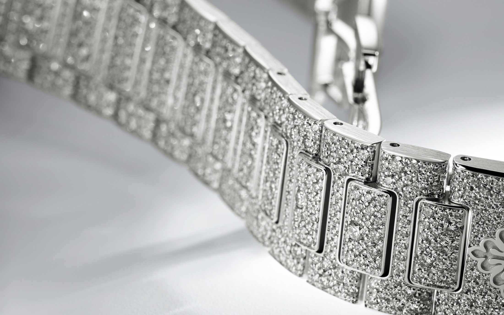

PATEK PHILIPPE

Patek Philippe declina il Nautilus Haute Joaillerie Ref. 7118/1450 in una nuova interpretazione in oro bianco, con cassa,
lunetta e bracciale ornati da diamanti incastonati a neve e quadrante illuminato da file di pietre che si inscrivono tra le piccole onde in rilievo, tipiche della collezione
Nautilus da donna. L’architettura e le accurate finiture del calibro 324 S a carica automatica sono visibili attraverso il fondo in cristallo di zaffiro trasparente. Il bracciale è dotato di un fermaglio déployant brevettato Patek Philippe, reso sicuro da quattro punti di attacco indipendenti. Il nuovo Nautilus Haute Joaillerie è illuminato dal bagliore di 2364 diamanti taglio brillante (11,63 ct) di qualità Top Wesselton Pur.
Caratteristiche
- CASSA:
Movimento meccanico a carica automatica. Calibro 324 S. Secondi al centro.
- QUADRANTE:
Pavé di diamanti, indici e cifre applicati o bruniti con rivestimento luminescente. Placca del quadrante in oro 18 ct.
- INCASTONATURA:
283 diamanti: 1,07 ct (quadrante). 456 diamanti: 2,25 ct (cassa). 20 diamanti: 0,03 ct (corona). 1605 diamanti: 8,28 ct (bracciale). Totale teorico di 2364 diamanti: 11,63 ct (modello illustrato).
- BRACCIALE
Oro bianco, incastonato di diamanti. Fermaglio déployant Nautilus incastonato.:
Prezzo: 534.051€